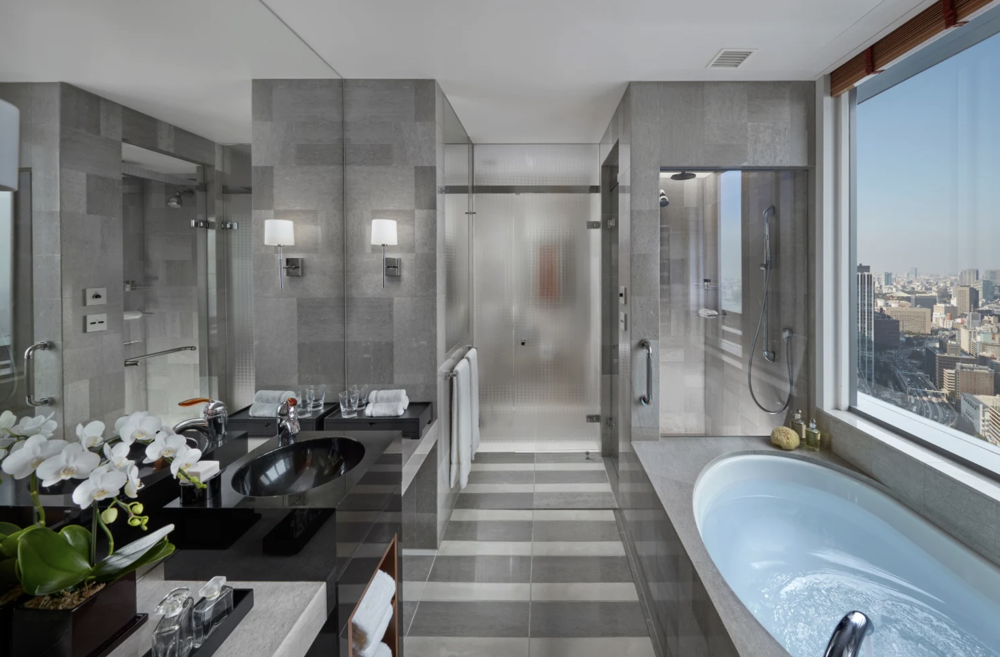

Bolder and more contemporary, with some of the best dining in the city — three Michelin-starred restaurants under one roof.
Mandarin Oriental, Tokyo is the food-first entry on my Japan shortlist: bolder and more contemporary than its peers, Forbes Five-Star, and home to some of the best dining in the city — three Michelin-starred restaurants on-site.
In a city that has more Michelin stars than any other on earth, keeping three of them inside your own elevator bank is a statement. For clients who plan Tokyo around tables, this is the hotel that shortens the distance between dinner and bed on the nights that matter.
It's also the contemporary counterweight to my other Tokyo picks: where Aman is hushed and The Peninsula is classic, the Mandarin leans into the city's modern energy — high floors, bold interiors, skyline everywhere.

Three Michelin-starred restaurants on-site. In the world's greatest food city, the strongest in-house dining bench of any hotel on my list.
The skyline from everywhere. High-floor rooms and public spaces that treat Tokyo's sprawl as the artwork.
Contemporary confidence. Bold, current interiors for travelers who want Tokyo's energy inside the hotel, not just outside it.
Book the tables when you book the room. The on-site restaurants command their own demand — I reserve both together.
Nihonbashi is polished, not neon. A refined district; the Shibuya-scramble version of Tokyo is a short ride away.
Choose by personality. The hushed sanctuary is Aman; the Ginza classic is The Peninsula; the contemporary food-first stay is here.
For travelers who plan Tokyo around its tables, this is the hotel I name first.
Rates through me are identical to booking direct — the perks are not. As a Fora advisor, my clients receive a space-available upgrade, daily breakfast, and a hotel credit — plus my direct line to the team on property before and during your stay.
Check Availability